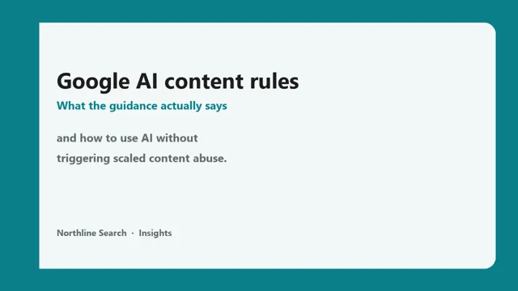
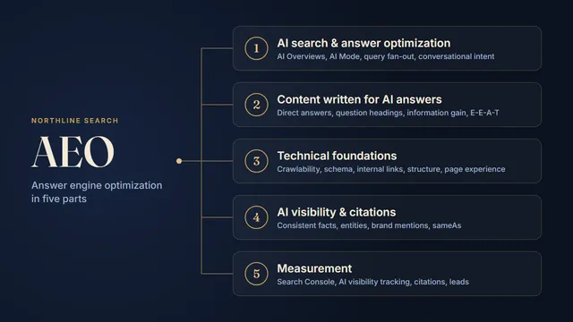

Field notes from real audits.
What we find when we crawl every page, test real speed and check how AI search sees a site.
Why AI search does not show up in your analytics
A ChatGPT mention can send the visit days later through Google. Similarweb's numbers, and a monthly check that does not pretend last-click is the whole story.

AI searchGoogle's AI content rules: what they actually say
Google does not ban AI content. It bans scaled, low-value pages. What Search Central's guidance means, and a practical workflow for using AI without hurting rankings or AI citations.

AI searchAEO explained: the 5 parts of answer engine optimization
Answer engine optimization in five parts: AI search, answer-ready content, technical foundations, citations and measurement. What each one means and what to do first.
Technical SEOWhy your SEO report says "zero errors" when there are hundreds
Sampled crawls, sitemap-only checks and CDN caching hide real problems. Here is what a full crawl with live re-checks finds that automated reports miss.
PerformanceIs your caching plugin delaying your mobile LCP?
Lazy-loading a hero background image can push Largest Contentful Paint past 15 seconds on mobile. How to spot it in Lighthouse and fix it in WordPress.
AI searchHow to check whether AI crawlers can read your site
robots.txt rules, CDN bot settings and origin firewalls can each block ChatGPT, Claude or Perplexity. A practical way to test all three layers.